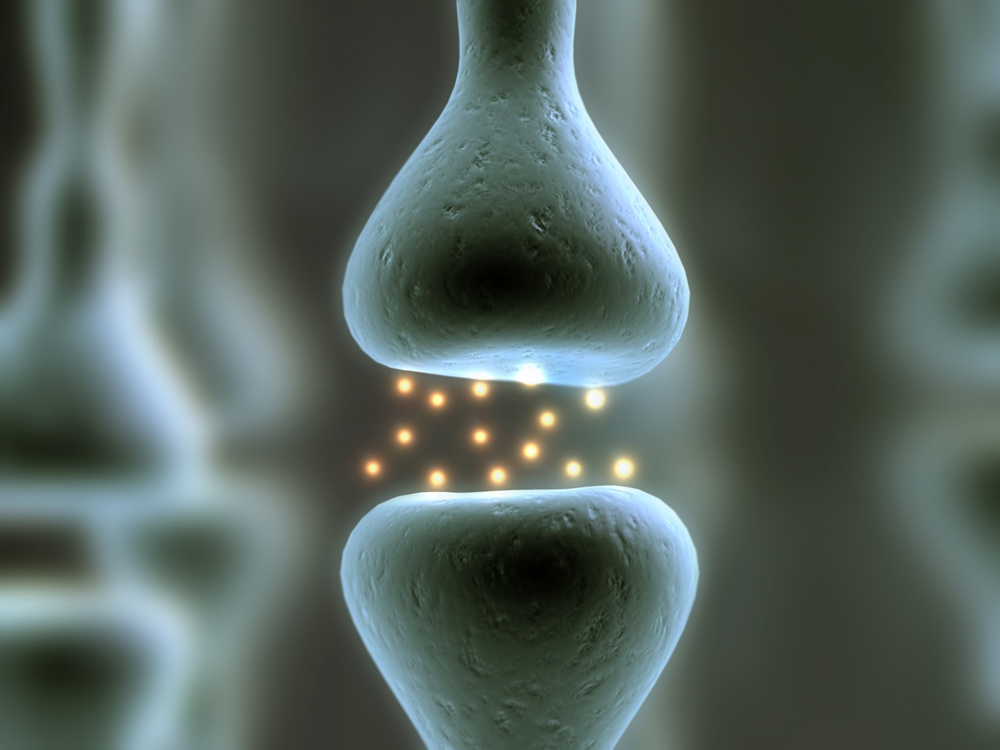

Stimulating Machines Enhancing the Performance of your Brain
Hera Wu
Spring 2012

In a culture where our intelligence and performance in school determine
future success, a means of manipulating and enhancing our cognition in
our increasingly technologically advanced world is something that can
be very valuable, but in turn very controversial, not to mention,
potentially harmful. Currently on college campuses, illegal use of
cognitive-enhancing prescription drugs such as Adderall and Ritalin are
very prevalent. These drugs were originally used to treat attention
deficit hyperactivity disorder (ADHD). Barbara Sahakian and Sharon
Morein-Zamir, researchers at the University of Cambridge in the
Department of Psychiatry and the MRC/Wellcome Trust Behavioural and
Clinical Neuroscience Institute, found in 2007 that these drugs are
stimulants which affect the catecholamine system, a system of chemical
signals and responding organs that create physiological responses to
prepare the body for physical activity. The drugs act in a way that
allows consumers to increase focus, increase the function of their
working memory, and increase flexibility of response measured through a
variety of tests and performance evaluating activities such as puzzles
or problems having to do with relevant areas of the brain.
Henry Greely, professor at the Stanford
Law School, and his colleagues investigated the different types of
pharmaceuticals used for cognitive-enhancing effects on patients and on
healthy people or people without the proper prescriptions and the
ethics behind their use. Greenly raises a concern about the risks of
drugs on their users, considering that the drugs affect the brain.
Because many of the drugs are used for ADHD treatment in children whose
brains are still growing, patients were more susceptible to any
negative effects of drugs during brain growth.
These pharmaceuticals are invasive ways of
cognitive-enhancement because the drugs are ingested, or rather put
into the body and must be processed by it. Modes of Non-invasive Brain
Stimulation (NIBS) have been experimented with and researched. This can
be distinguished as a form of external enhancement, an important
distinction in the moral and ethical argument. A group of scientists
led by Roi Cohen Kadosh, from the Department of Experimental Psychology
at the University of Oxford, observing the new non-invasive methods say
that, “NIBS methods, such as transcranial electrical stimulation (TES)
and transcranial magnetic stimulation (TMS), especially in combination
with behavioural training, offer promising alternatives or adjuvant
strategies for conditions in which pharmacological intervention has not
been successful.” These methods use machines that use electrical
currents to stimulate the brain rather than chemicals of drugs. The TES
relies on the implementation of changes in the electrical field around
the brain whereas TMS uses the magnetic field.
These scientists are now examining the Transcranial Direct Current Stimulation (TDCS) for its effects. In The Neuroethics of Non-invasive Brain Stimulation,
these scientists explain how the process works. “In TDCS, weak
electrical currents, for example 1 mA, are applied for a short duration
(~20 minutes) to the head via electrodes that are placed on the scalp.
The currents pass through the skull and alter spontaneous neural
activity.” Applied electric currents increase the firing of neurons,
causing more stimulation and tissue response which can increase
cognitive ability and motor function. It can potentially be easily
accessible and can be applied to different “problem” areas on the body,
not just the brain. The problem right now is that there is not enough
research done on the correct ways to utilize the TDCS, such as the
appropriate current strength and application different individuals such
as children.
These methods are not only non-invasive,
but also have the ability to treat congenital and acquired neural
diseases such as autism and chronic aphasia, both of which are serious
behavioral and learning disabilities. Most of the ethical issues come
into play when healthy individuals are the subjects for treatment.
Kadosh says, “TDCS studies have shown that it is possible to enhance
fundamental human capacities, such as motor and sensorimotor skills,
vision, decision-making, and problem-solving, mathematical cognition,
language, memory, and attention.” All these traits could be associated
with an unfair advantage in certain situations when used as enhancement
on healthy people. With the relative low-cost of this new technology,
if eventually mass-produced, what would stop anyone from self-enhancing?
About the Author
Hera Wu, class of 2014, has premedical intentions as a Molecular and Cell Biology Major with Biochemistry and Molecular Biology Emphasis and an Ethnic Studies Minor.